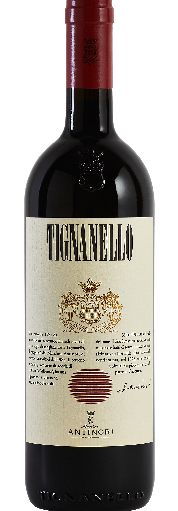

Creato nel 1971 da Marchesi Antinori, il Tignanello
fu il primo Sangiovese ad essere affinato in barrique.
Rivoluzionario per la Toscana, unisce tradizione e
modernità: ciliegia, liquirizia, cioccolato e note
balsamiche si fondono in un sorso pieno e
avvolgente. Ideale per piatti robusti come brasati,
arrosti e formaggi stagionati.
Il Tignanello ha segnato una svolta epocale nella
viticoltura italiana, rompendo con le regole delle
DOC per dare spazio alla qualità e alla
sperimentazione.
L’incontro tra Sangiovese, Cabernet Sauvignon e
Cabernet Franc ha creato un rosso elegante, potente
e armonico, capace di raccontare la Toscana in chiave
contemporanea. Un vino che ha fatto scuola e
continua a essere un punto di riferimento assoluto.
